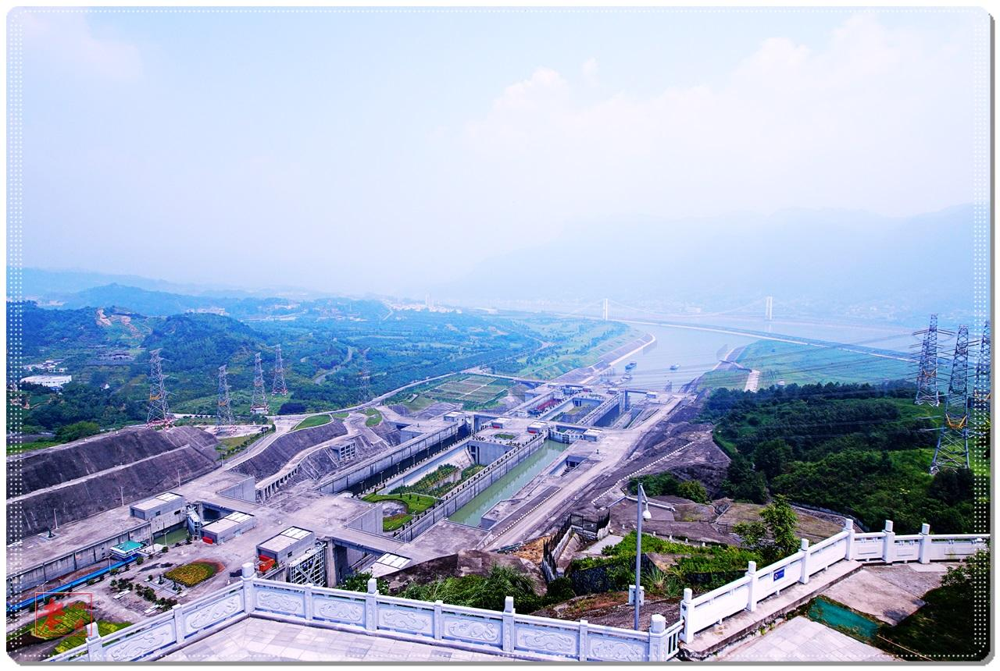
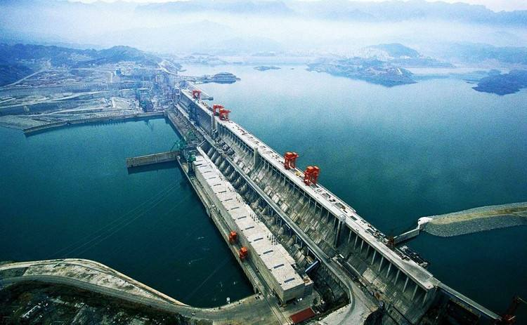

应急处置案例详细信息
突发事件编号
123456567890
突发事件名称
XXXXXXXXXXX
所在地点
ssssssss
所在水库编码
SK45678
所在水库名称
三峡水坝
事件发生时间
kkkkkkkkkkkkk
事件信息描述
LLLLLLLLLLLLL
事件视频文件
video.mp4
事件现场照片
现场照片
事件过程描述
三峡大坝，位于中国湖北省宜昌市三斗坪镇境内，距下游葛洲坝水利枢纽工程38公里，是当今世界最大的水利发电工程——三峡水电站的主体工程、三峡大坝旅游区的核心景观、三峡水库的东端。三峡大坝工程包括主体建筑物及导流工程两部分，全长约3335m，坝高185米，工程总投资为954.6亿人民币，于1994年12月14日正式动工修建，2006年5月20日全线修建成功。经国家防总批准，三峡水库于2011年9月10日零时正式启动第四次175米试验性蓄水，至18日19时，水库水位已达到160.18米。2012年7月23日，三峡枢纽开启7个泄洪深孔泄洪。上游来水流量激增至每秒4.6万立方米。2012年7月24日，三峡大坝入库流量达7.12万立方米/秒，是三峡水库建库以来遭遇的最大洪峰。
应急处置措施
三峡大坝，位于中国湖北省宜昌市三斗坪镇境内，距下游葛洲坝水利枢纽工程38公里，是当今世界最大的水利发电工程——三峡水电站的主体工程、三峡大坝旅游区的核心景观、三峡水库的东端。三峡大坝工程包括主体建筑物及导流工程两部分，全长约3335m，坝高185米，工程总投资为954.6亿人民币，于1994年12月14日正式动工修建，2006年5月20日全线修建成功。经国家防总批准，三峡水库于2011年9月10日零时正式启动第四次175米试验性蓄水，至18日19时，水库水位已达到160.18米。2012年7月23日，三峡枢纽开启7个泄洪深孔泄洪。上游来水流量激增至每秒4.6万立方米。2012年7月24日，三峡大坝入库流量达7.12万立方米/秒，是三峡水库建库以来遭遇的最大洪峰。
应急调度方案
三峡大坝，位于中国湖北省宜昌市三斗坪镇境内，距下游葛洲坝水利枢纽工程38公里，是当今世界最大的水利发电工程——三峡水电站的主体工程、三峡大坝旅游区的核心景观、三峡水库的东端。三峡大坝工程包括主体建筑物及导流工程两部分，全长约3335m，坝高185米，工程总投资为954.6亿人民币，于1994年12月14日正式动工修建，2006年5月20日全线修建成功。经国家防总批准，三峡水库于2011年9月10日零时正式启动第四次175米试验性蓄水，至18日19时，水库水位已达到160.18米。2012年7月23日，三峡枢纽开启7个泄洪深孔泄洪。上游来水流量激增至每秒4.6万立方米。2012年7月24日，三峡大坝入库流量达7.12万立方米/秒，是三峡水库建库以来遭遇的最大洪峰。
应急抢救
rrrrrrrrr
应急转移和救助
RRRRRRRRRR
应急监测与巡查
AAAAAAAAAAAAAAAA
灾情调查与评估
三峡大坝，位于中国湖北省宜昌市三斗坪镇境内，距下游葛洲坝水利枢纽工程38公里，是当今世界最大的水利发电工程——三峡水电站的主体工程、三峡大坝旅游区的核心景观、三峡水库的东端。三峡大坝工程包括主体建筑物及导流工程两部分，全长约3335m，坝高185米，工程总投资为954.6亿人民币，于1994年12月14日正式动工修建，2006年5月20日全线修建成功。经国家防总批准，三峡水库于2011年9月10日零时正式启动第四次175米试验性蓄水，至18日19时，水库水位已达到160.18米。2012年7月23日，三峡枢纽开启7个泄洪深孔泄洪。上游来水流量激增至每秒4.6万立方米。2012年7月24日，三峡大坝入库流量达7.12万立方米/秒，是三峡水库建库以来遭遇的最大洪峰。
经验教训
做一名合格的安全员”是我现行本职工作的追求目标，自肩负安全员这个重任以来，我始终保持清醒的头脑，勤勤恳恳、踏踏实实的态度来对待我的工作，在现行岗位上任职一年来，严格按照年初制定的工作目标，全面贯彻“安全第一、预防为主”的方针,强化安全生产管理，xx年在所长的正确领导下，农电公司有关领导的信任与支持下，从事我非常珍惜这个安全角色，以积极的态度投入工作，今年的工作我感到非常充实的一年
×
三峡大坝XX事件视频文件
×
三峡大坝XX事件现场照片

